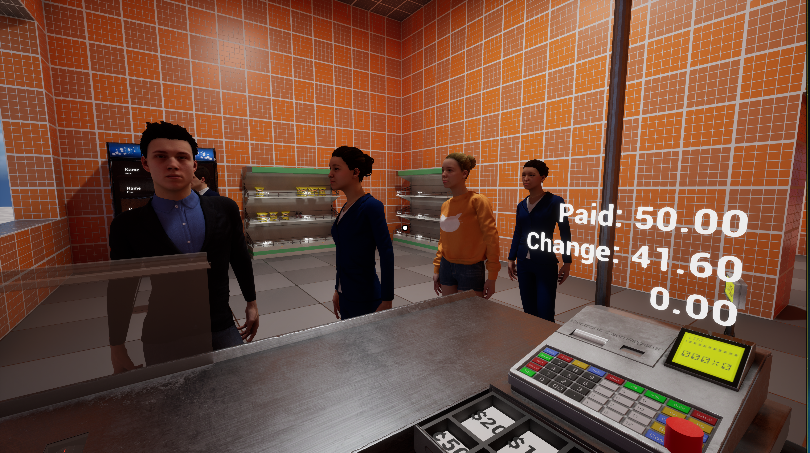

从店铺结构，到经营区域。
设计允许玩家构建超市结构、安排不同区域。Demo 的目标包含部分可自由摆放的建筑结构，让经营空间成为玩家可以塑造的一部分。
LET’S SUPERMARKET / 合作经营
项目进行中
从一批货物、一张价签开始。通过进货、合理定价与销售赚取收益，再把收益投入超市的下一步成长。

01 / BUSINESS LOOP
一次销售是循环中的一环。经营的核心，是让货物转化为收益，再让收益转化为下一轮经营的空间。
购入商品，开始新一轮经营。
为商品设定价格，连接进货与销售。
把商品出售给顾客，积累经营收益。
将收益投入成长，推动循环升级。
02 / ON THE SHOP FLOOR
现有素材展示了超市店内与收银视角。项目仍在推进，截图呈现当前原型的画面。
03 / DESIGN BRIEF
游戏设计文档将经营与 RPG、模拟建造结合，以 low-poly 风格为方向。这里呈现文档中的设计目标。
设计允许玩家构建超市结构、安排不同区域。Demo 的目标包含部分可自由摆放的建筑结构，让经营空间成为玩家可以塑造的一部分。
主控角色以第一人称进行移动与交互，补货、结账和外送包装被列为交互方向。让玩家既能经营超市，也能亲自走进经营现场。
文档提出营业额达标后触发 NPC 对话与主线任务的方向。触发条件仍为暂定，剧情部分尚待完善。
依据 《超市模拟器游戏设计》↗ 的项目概述、目标与玩法机制整理；设计目标的实现状态随项目开发更新。
04 / GROWTH DIRECTIONS
以下是项目描述中的后续成长方向，作为设计规划展示；具体实现与完成度随开发推进更新。
将经营收益用于招募 NPC 角色，作为超市成长的一条路径。
角色招募解锁更多超市结构，让积累的收益转化为经营空间的成长。
空间成长加入外送等功能玩法，拓展现有经营循环的体验范围。
玩法拓展进货 → 定价 → 销售 → 再投资 → 继续经营